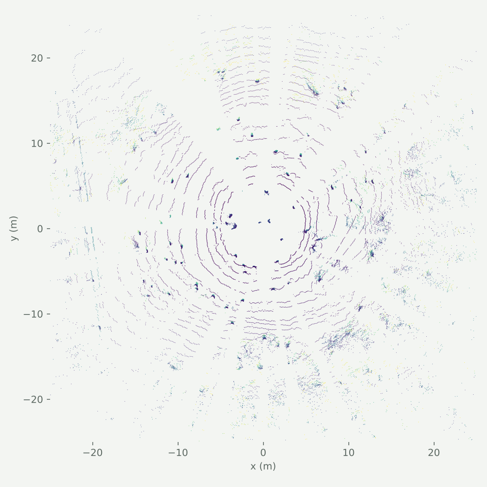
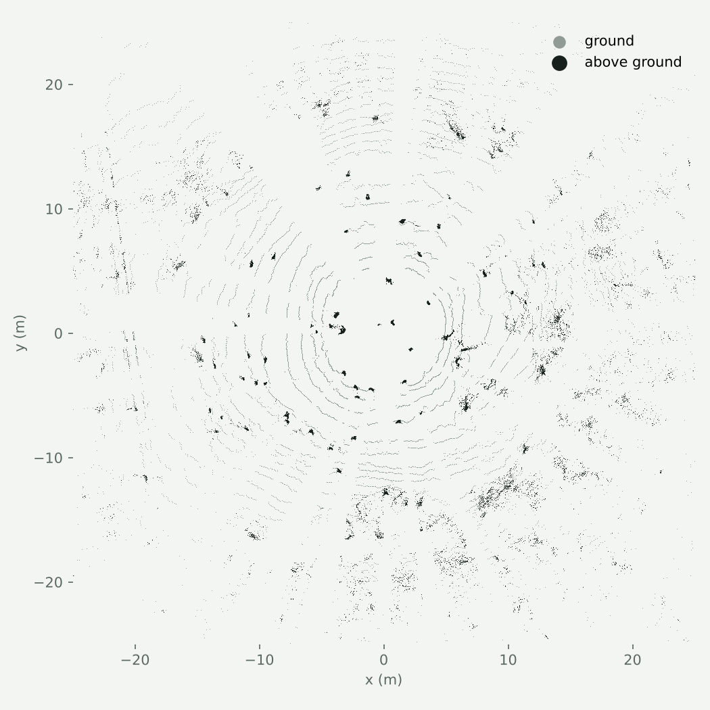
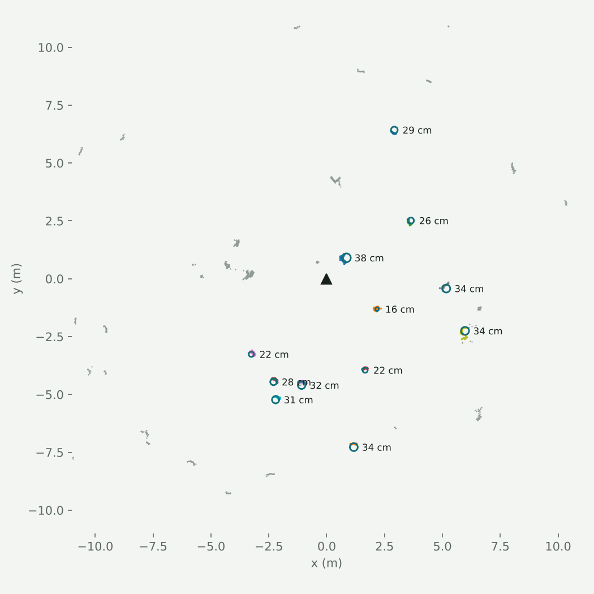
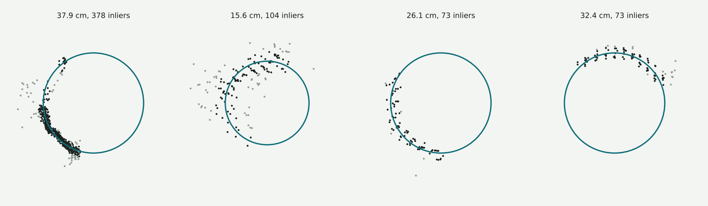
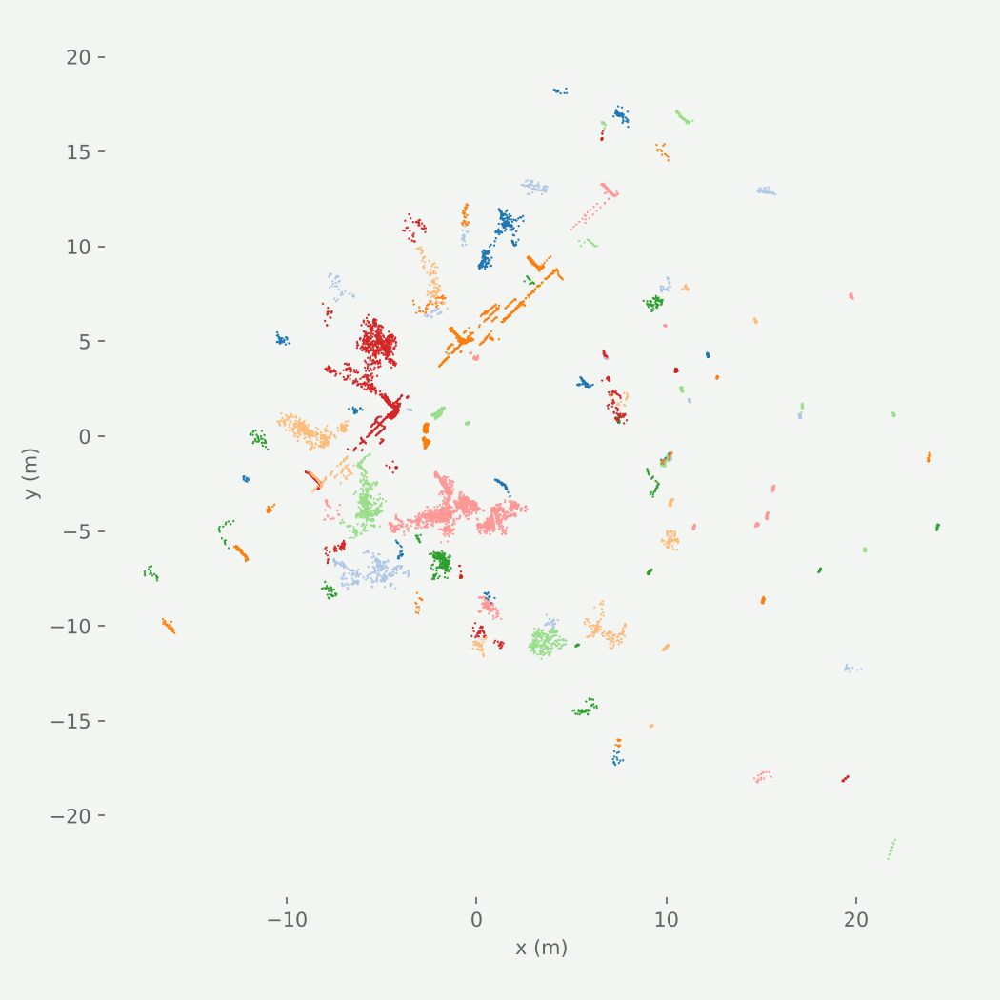

Research, MSU Center for Advanced Vehicular Systems
Measuring tree trunks from a single LiDAR scan
A C++17 pipeline that finds tree trunks in an off-road point cloud from a Clearpath Warthog and estimates each trunk's diameter at breast height.
- Role
- Sole developer
- When
- 2026
- Stack
- C++17, PCL, Eigen, GLM, NATURE elevation grid
- Code
- nature-stack/src/Diameter_Proj
Why trunk diameter
For an off-road vehicle, a tree is not just "an obstacle". Whether it can push through brush, how wide a gap is, and what a forestry crew wants recorded all depend on how big the trunks are. Foresters measure diameter at breast height, 4.5 ft (1.37 m) above the ground. The goal here was to get that number automatically from a single LiDAR sweep, fast enough to run on the vehicle.

Pipeline
Each stage is a separate, timed step in C++17, with per-stage latency printed by small timing macros so the slow stage is always obvious.
- Load and convert. Read the PCD with PCL and convert it into NATURE's lightweight point-cloud message so the stack's own perception code can run on it.
- Remove the ground. NATURE's elevation grid (0.4 m cells, slope threshold 0.3) splits the cloud into surface returns and everything standing on it.
- Slice at breast height. Keep only obstacle points between 4 ft and 5 ft (1.22 m to 1.52 m) above the lowest obstacle point. A trunk becomes a thin ring of points; leaves, brush and branches mostly fall outside the band.
- Cluster. Euclidean clustering with a 0.1 m radius over a hand-written k-d tree: a balanced build from median splits, then radius searches that prune whole subtrees whose splitting plane is farther than the threshold.
- Fit. For each cluster, a least-squares cylinder fit (axis, centre and radius, solved with Eigen) gives the diameter, and a RANSAC circle fit (1,000 iterations) rejects outlier points from bark texture and nearby twigs.
- Write out. Every cluster is saved to a coloured, labelled PCD together with its estimated diameter, ready to inspect in a viewer.


What makes it hard
A LiDAR only ever sees the side of a trunk that faces it, so at breast height a trunk is not a circle but an arc covering a third of it or less. A circle fit through a short arc is sensitive to noise: a few millimetres of bark texture can swing the radius by centimetres. Brush and low branches that survive the height slice add clusters that are not trunks at all.

That is why the pipeline pairs a geometric cylinder fit with RANSAC, and why the height band is narrow. The useful levers are the band height, the clustering radius and the inlier threshold, and the timing output makes it cheap to sweep them.

The figures on this page were rendered in Python from the PCD files in the repository. The ground, slice and fit plots re-run the same stages with the same parameters as the C++ code so the steps can be shown one at a time; the last figure is the C++ output as written.
Open directions
- Fuse several scans as the vehicle moves, so trunks are seen from more than one side and the arcs close up.
- Filter clusters by shape (verticality across stacked slices) before fitting, to throw out brush early.
- Compare against tape-measured diameters to put a real error bar on the estimates.